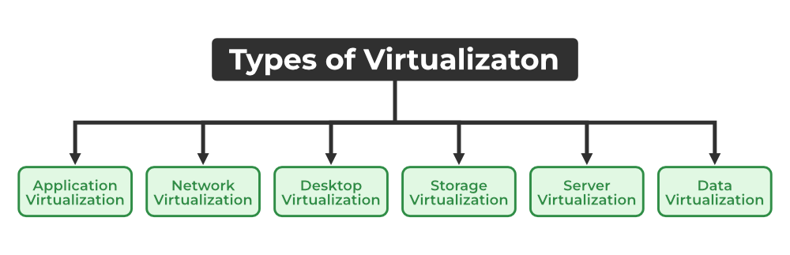

3) Types of Virtualization:
i) Application Virtualization:
- It allows you to use the software without installing its application on your computer.
- They run on a remote server.
- You can connect it through Internet.
- All data are stored on servers not on your computer.
ii) Network Virtualization:
- It creates multiple virtual networks by using just one physical network.
- It creates virtual versions of Routers, Switches, Firewalls, etc.. by using software
- A company can create different virtual networks for different departments.

iii) Desktop Virtualization:
- It allows logging into your personal computer from anywhere.
- They run on a remote server.
- You can connect it through Internet.
- Easy to update the software for all users at once.
iv) Storage Virtualization:
- It combines multiple storage systems into a single storage system.
- Continues to work smoothly even if one storage device fails.
- Storage Virtualization helps in backup, recovery, etc...
v) Server Virtualization:
- It divides one physical server into multiple virtual servers.
- It creates and manages the virtual servers by using a special software called as Hypervisor.
- Server Virtualization also helps in backup, recovery, etc...
vi) Data Virtualization:
- It gathers the data from different devices into one place.
- It creates a unified view of the data
- You can access the data through a single Interface.